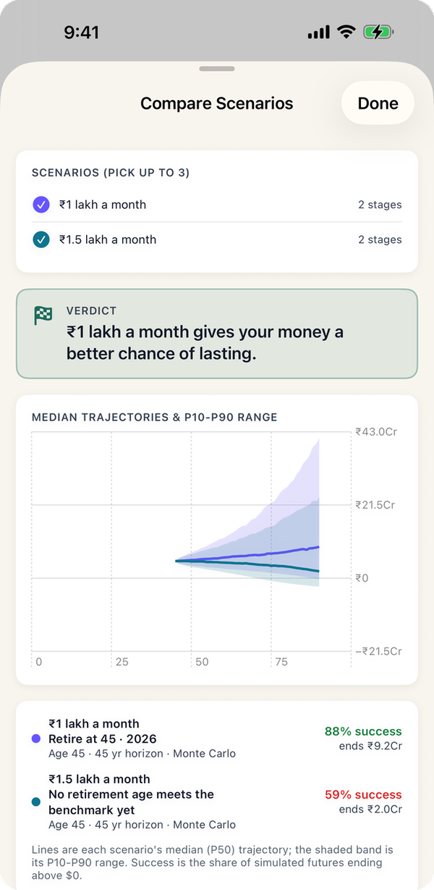
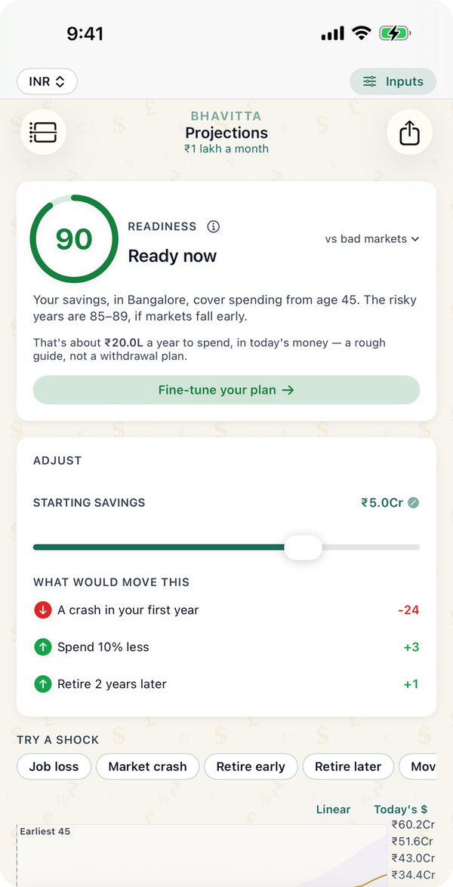

₹5 crore is the number that comes up when people talk about retiring early in India, at 35, 40 or 45, rather than at 60. It sounds like more than enough, and for many lifestyles it is. But retiring at 40 means the money has to last 50 years, and the monthly figure it can carry is smaller than people expect. The tables below come from Bhavitta's own engine, the same one the app runs: 10,000 simulated market paths for each figure, in rupees, for a couple who need the money to last to 90.
How much can you spend each month on ₹5 crore?
The largest monthly spending, to the nearest ₹1,000, at which ₹5 crore lasts to 90 in at least 80% (or 90%) of paths. Health insurance is paid on top.
| Stop working at | 80% chance | 90% chance |
|---|---|---|
| 35 | ₹1,01,000 | ₹80,000 |
| 40 | ₹1,08,000 | ₹87,000 |
| 45 | ₹1,17,000 | ₹93,000 |
| 50 | ₹1,26,000 | ₹1,03,000 |
| 55 | ₹1,39,000 | ₹1,14,000 |
Stopping at 35 instead of 55 costs about ₹38,000 a month of spending for life. From 35, ₹5 crore is 41 times a year's spending at the 80% level, a withdrawal rate of 2.4%. Download this table (CSV).
What chance does ₹5 crore give you?
The share of 10,000 market paths in which ₹5 crore lasts to 90, by monthly spending and the age you stop working:
| Monthly spending | Stop at 35 | Stop at 40 | Stop at 45 | Stop at 50 |
|---|---|---|---|---|
| ₹1 lakh | 80% | 84% | 87% | 91% |
| ₹1.5 lakh | 51% | 55% | 60% | 66% |
| ₹2 lakh | 24% | 27% | 31% | 37% |
| ₹2.5 lakh | 9% | 12% | 13% | 17% |
| ₹3 lakh | 3% | 4% | 4% | 5% |
| ₹4 lakh | 0% | 0% | 0% | 0% |
The line falls between ₹1 lakh and ₹1.5 lakh a month. Up to ₹1 lakh, ₹5 crore works from any of these ages; at ₹1.5 lakh it stays below the bar even from 50 (66%). Spending matters far more than the age you stop: going from ₹1 lakh to ₹1.5 lakh costs more than stopping fifteen years earlier.

Which cities does ₹5 crore work in?
Instead of a monthly figure, these use the app's resident cost of living for a comfortable couple in each city, including rent, and that city's inflation:
| City | Couple's cost a month | Stop at 35 | Stop at 40 | Stop at 45 |
|---|---|---|---|---|
| Mumbai | ₹1,07,500 | 76% | 80% | 84% |
| Bangalore | ₹80,600 | 89% | 92% | 94% |
| Delhi | ₹75,300 | 93% | 95% | 96% |
| Goa | ₹75,300 | 94% | 95% | 97% |
| Hyderabad | ₹69,900 | 93% | 95% | 96% |
| Pune | ₹64,500 | 95% | 96% | 97% |
| Chennai | ₹64,500 | 95% | 96% | 97% |
At a typical comfortable lifestyle, ₹5 crore is enough to stop at 40 in every city, with Mumbai right at the bar. In Pune or Chennai it leaves a wide margin: room for travel, a car every decade, or helping children, which these figures don't include.

Retiring at 35 or 40 on ₹5 crore
- Fifty years is a long time. From 35, the money has to outlast five decades of inflation, at least one or two deep market falls, and health costs that keep rising. That is why the safe withdrawal rate here is 2.4%, not 4%.
- The order of returns matters most early on. A bad first few years does more damage than the same fall at 70, because you are selling to live while prices are down.
- Some income helps a lot. Consulting, a small business or rent for even five years after stopping takes a large bite out of the risk. Add it as a stage in the app to see how much.
- Mix matters too. Equity or debt after retirement compares the app's three Indian return presets.
What the numbers assume
- A couple with no further income, pension or rent. The corpus is everything they hold the day they stop working.
- Monthly spending in today's rupees, rising with Bangalore's inflation of 5% a year (state CPI-Urban). Health insurance comes on top: ₹40,000 a year today, rising 10% a year.
- Returns from the app's Balanced India Monte Carlo preset: 9.5% a year on average, 13% volatility, all in rupees. 10,000 trials per figure.
- Survival means the balance stays above zero in every year to 90, not just at the end. 80% is the bar the app uses for "ready".
- EPF, PPF and NPS count inside the corpus. If part of it is locked until 58 or 60, the liquid part has to carry you until then.
- No tax in retirement. Add a tax rate to the retirement stage in the app if your withdrawals will be taxed.
- City tables use the app's resident cost of living for a comfortable couple, including rent, and each city's own inflation rate, instead of a monthly figure.
Common questions
Is ₹5 crore enough to retire in India?
For a couple spending up to about ₹1.2 lakh a month, yes, from 45: it supports ₹1.17 lakh a month at an 80% chance of lasting to 90, with health insurance on top. On ₹1.5 lakh a month it lasts in only 60% of paths from 45.
Is ₹5 crore enough to retire at 40?
On ₹1 lakh a month, yes: 84% of paths last to 90, and the safe level is about ₹1.08 lakh a month. At a typical comfortable cost of living it clears 80% in every one of the seven cities, with Mumbai exactly at 80%.
Is ₹5 crore enough to retire at 35?
Just, at ₹1 lakh a month: exactly 80% of paths last to 90. The money has to last 55 years, so anything above about ₹1 lakh a month falls below the bar.
How much monthly income can ₹5 crore give?
About ₹1.17 lakh a month in today's money, rising with inflation, for a couple from 45 at an 80% chance; ₹1.01 lakh from 35, ₹1.26 lakh from 50 and ₹1.39 lakh from 55.
Is ₹5 crore enough to live in Mumbai after retirement?
At the app's comfortable Mumbai cost for a couple, about ₹1.07 lakh a month including rent, ₹5 crore lasts to 90 in 84% of paths from 45, 80% from 40 and 76% from 35.
Is ₹5 crore enough for ₹2 lakh a month?
No: ₹2 lakh a month on ₹5 crore lasts to 90 in 31% of paths from 45 and 37% from 50. That lifestyle needs about ₹8.3 crore from 45 (see Is ₹3 crore enough? for the corpus table).
Run your own number
- Set the currency to INR at the top of the app. New plans start with Indian defaults: resident cost of living, city inflation and the Balanced India return preset.
- On the Start tab, enter your age, savings, income and city. To use your own monthly figure, open the city stage on My Plan and type your yearly spending.
- Add Health insurance, EPF, PPF, NPS and any pension from "Add a life event".
- The Projections tab shows your chance of lasting to 90, the earliest age you could stop at 80%, and a savings slider to try your own corpus against your own spending.
Find your own number
Free on iPhone and Android. No account; your plan never leaves your phone.